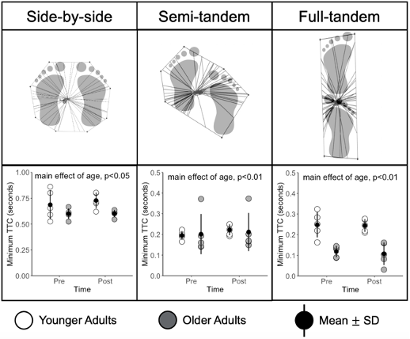

Assessment of Aging Related Declines in Postural Control Using Time To Contact
2022 American Society of Biomechanics Abstract
Introduction
Performance fatigability, a decline in performance in response to a standardized activity [1] is an early predictor of mobility decline in older adults. Muscle fatigue (decrease in maximal power with activity) in older adults could contribute to greater performance fatigability and has been shown to impact postural control. [2] The advanced version of the Short Physical Performance Battery (SPPB-A) may be used to quantify performance fatigability as it includes tasks that evaluate an individual’s postural control in challenging positions. However, only stance time is used to evaluate performance. [3] An individual may hold a position for the full task time, 30 seconds, but information about their center of pressure (COP) vector is not captured.
Time-to-contact (TTC) is a measure that accounts for both the spatial and temporal aspects of postural control because it quantifies how much time it would take the center of pressure to contact a stability boundary. [4,5] Functionally, TTC represents the time until a person would need to make a postural correction, such as taking a step, in order to prevent a fall. [6,7] TTC has been shown to be lower in older adults in basic postural stances, [4] but it has not yet been quantified in progressively challenging stances or in response to a standardized activity to quantify performance fatigability. The purpose of this study was to compare TTC in younger and older adults in the four stances of the SPPB-A before and after a prolonged walk that has been shown to result in knee extensor muscle fatigue and postural disturbances.
Methods
Five young adults (35.6±3.0 yr, BMI: 23.3±3.9 kg∙m-2, 1 male) and five older adults (72.0±1.9 yr, BMI: 24.5±3.4 kg∙m-2, 3 male), all healthy and sedentary, stood on a force plate (AMTI., MA, USA) in standardized lab footwear in four positions: side-by-side (SBS), semi-tandem (ST), full-tandem (FT), and single leg (SL) stances, attempting to hold each stance for the full 30s. A motion capture system (Qualysis, Sweden) collected marker positions on both feet during each trial. Force data were sampled at 100Hz and filtered with a 2nd order low-pass Butterworth filter with a cut-off frequency of 10Hz. Participants then completed a 30-min treadmill walk (30MTW) [2] at their self-selected speed, determined by a 400m overground walk test, and then repeated the four balance positions. Minimum TTC (s) was calculated for each trial by solving for the time variable, τ, in the equation: [4] P_i(τ)=r(t_i )+P(t_i )⋅τ+a(t_i)⋅τ^2⁄2. At least 50% of the trial had to be completed to accurately quantify TTC. For each stance, a 2 x 2 ANOVA was conducted using age and time (pre or post 30MTW) as factors. Muscle fatigue was quantified the change in peak knee extensor torque (at 240 dps) following the 30MTW.
Results and Discussion
All young participants held each stance for 30s. All older participants held the SBS and ST, but not the FT and SL, stances for 30s. For FT, older group stance times were 27.3±6s before and 24.3±11s after the 30MTW. For SL, older group stance times were 18.9±11s before and 10.5±7.8s after the 30MTW. The older group did no hold the SL stance for sufficient time and thus it was excluded from the TTC analysis. There was a main effect of age for minimum TTC (p<0.05) for the SBS, which agrees with previous data.4 ST and FT stances also showed an age effect (p<0.01). There was no effect of time for any stance, which is supported by a lack of muscle fatigue in response to the 30MTW (data not shown). Reduced TTC in the older adults reveals diminished postural control in the spatio-temporal domain in all 3 stances, suggesting an increased risk of falls due to perturbations compared with younger adults.

Figure 1: Trajectory plots of TTC (top) for the three stances included in the analysis. Minimum TTC (in seconds) for pre and post 30MTW (bottom). There was a main effect of age for the SBS (p<0.05), ST (p<0.01) and FT (p<0.01) stances.
This unique analysis approach offers a viable method to systematically account for the highly complex nature of human movement, especially adaptations displayed in response to injury and pain. Apriori selection of discrete variables may also miss important biomechanical adaptations displayed by those with PFP. Lastly, although runners have recovered from pain, they may still display biomechanical adaptations similar to symptomatic individuals, which could put them at risk of redeveloping PFP.
Significance
TTC detected lower in postural control at baseline in the healthy older compared with younger adults. Notably, this was the case whether or not they failed to complete the full 30 s of the balance tasks. Thus, this metric may be effective at capturing reduced postural performance despite task completion.
References
- Shrack et al., 2020. J of Gerontology. 9: e63-e66.
- Foulis et al., 2017. Plos One. 12: e0183483.
- Simonsick et al., 2001. J of Gerontol. Ser. A. 56: M644-M649.
- Slobounov et al., 1998. J of Gerontol. Ser. A. 53A: B71-B80.
- van Emmerik et al., 2010. Gait & Posture. 32: 608-614.
- Richmond et al., 2020. J of Sport Sciences. 38: 21-28.
- Hasson et al., 2008. J of Biomechanics. 41: 2121-2129.
Progress Updates
We are currentlty writing a manuscript for this project.